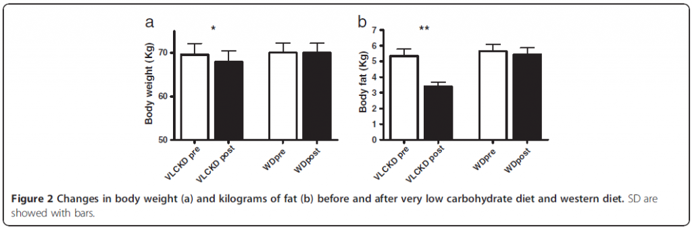

Idrettsutøvere og fysisk aktive mennesker er stadig på utkikk etter best mulig resultater. At et passende kosthold er idéelt for prestasjon er generelt en dårlig bevart hemmelighet. Det heter seg så fint at et godt kosthold ikke kan gjøre en gjennomsnittlig utøver til en verdensstjerne, men et dårlig kosthold kan gjøre en verdensstjerne til en gjennomsnittlig utøver.
Idretter som tar hensyn til vektklasser er spesielt avhengig av et påpasselig kosthold som settes i perspektiv med både trening og konkurranse for å oppnå best mulige resultater. Dette byr på utfordringer da det gjerne benyttes ekstreme metoder i dagene/timene før konkurranser for å holde seg innenfor vektklasser. Dette kan bl.a. føre til dehydrering og forstyrrelser i kroppens elektrolyttbalanse, som igjen kan påvirke prestasjon. En studie som nylig ble publisert i “Journal of the International Society of Sports Nutrition” så på effekten av en ketogen diett på eksplosiv styrke hos turnere[1].
Metoder
Åtte mannlige turnere, alle på elitenivå, ble rekruttert til studien, hvor man i 30 dager skulle følge en modifisert ketogen diett og samtidig vedlikeholde treningsmengde (ca. 30 timer/uke). Deltakerne fungerte som sine egne kontroller og antropometriske mål av hudfolder, livvidde, hoftevidde, vekt og høyde ble gjort ved baseline og ved studiens slutt. Etter disse målene ble også prestasjon i følgende øvelser registrert:
Squat jumps
Counter movement jumps
15 seconds of counter movement jumps
Push-ups
Reverse chins
Legs closed barrier maximum test
Dips
Samme protokoll ble gjennomført tre måneder senere. Den eneste forskjellen var at deltakerne da fulgte sine normale dietter.
Dietten
Dietten var som nevnt ketogen. Deltakerne fikk utlevert en liste med matvarer som var akseptert på dietten. Den inkluderte ad libitum inntak av storfekjøtt, fjærfe, fisk, ubegrenset med grønne grønnsaker, kjøttpålegg, egg og ost. Proteintilskudd uten karbohydrater ble også benyttet, i tillegg til multivitamin-tilskudd. Ved kontrollen tre måneder senere besto den «normale» dietten av poteter, fullkornsprodukter, kjøtt, fisk, egg, fjærfe, grønnsaker, belgfrukter, olivenolje, helmelk og vin. Denne dietten ble også konsumert ad libitum.
Resultater
I følge en 3-dagers dagbok ble det konsumert gjennomsnittlig 1971 kcal på den ketogene dietten og 2273 på vanlig kost. På bildet under kan du se forandringene i kroppsvekt og fettmasse før og etter diettintervensjonene.
Figuren viser a) vekttap før og etter intervensjoner og b) tap av fettmasse i kg før og etter intervensjoner.
Som figurene over viser var det en signifikant reduksjon i kroppsvekt og kroppsfett etter ketogen diettintervensjon. Fettprosenten sank fra 7.6 til 5% som igjen gjør at andel fettfri masse stiger fra 92.4% til 95%. 30 dager på vestlig diett hadde minimal effekt i forhold. Det var heller ingen signifikant effekt på ytelsen før og etter diettintervensjonene.
Diskusjon
Dette er en av få til nå publiserte studier som ser på effekten av ketogene dietter på eksplosive styrkeøvelser. Til tross for at den ketogene dietten ikke hadde noen signifikant effekt på de eksplosive styrkeøvelsene, kan den være nyttig i vektkategoriske idretter da det heller ikke ble observert noen negativ effekt. Det kan imidlertid være flere grunner til at man ikke så progresjon i de forskjellige øvelsene.
1) Et kalorioverskudd er ofte nødvendig for styrkeøkning. Hos utøvere som allerede er godt trent og i toppform, trener 30 timer i uken, har lav fettprosent, og i tillegg ikke spiser mer en drøyt 2000 kalorier skal det godt gjøres å ha noen som helst effekt på eksplosiv styrke. Det lave kaloriinntaket kan delvis skyldes et økt inntak av både fett og protein som kan virke mettende.
2) I introduksjonen står det at utøverne ble bedt om å trene som vanlig i de 30 dagene diettintervensjonen varte. Det er ikke spesifisert hvilke metoder og øvelser som ble benyttet, men sannsynligvis har fokus vært rettet mot å forbedre idrettsprestasjoner, og ikke mot å forbedre øvelsene som ble testet ved baseline og intervensjonens endelikt, noe som gjør det vanskelig å oppnå fremgang.
3) Studien peker på at mekanismene som øker forbruket av fett som energisubstrat er delvis felles med mekanismene som hindrer økning i muskelmasse. Forfatterne går derimot ikke inn på hvilke mekanismer det er snakk om. Dette kan avhenge av flere forskjellige faktorer. Glukagon er et av flere hormoner som er aktivt ved energiunderskudd, men også i ketose. Hormonet er katabolt og stimulerer til frigjøring av glukose og fettsyrer i blodet. Et økt glukagonnivå vil også stimulere til økt frigjøring av katekolaminene andrenalin og norandrenalin. Disse hormonene virker muskelbesparende ved at de øker frigjøring av glukose fra lever og frigjøring av fett fra fettceller. På en annen side øker også pulsen, blodtrykket og nivåer av hormonet kortisol. Med andre ord fysiologiske mekanismer som ikke er forbundet med anabolisme.
Til tross for vektnedgang så man ingen signifikant reduksjon i muskelmasse hos deltakerne. Tar man de økte nivåene av katekolaminer i betraktning og samtidig nevner at proteininntaket lå rundt 2,8 g/kg kroppsvekt gjennom den ketogene perioden spiller dette en betydelig rolle for de muskelbesparende effektene man så etter 30 dager. For å vedlikeholde fettfri masse er det anbefalt et inntak på mellom 1,2-1,8 g/kg/kroppsvekt, og dette eksperimentet er altså godt innenfor sikkerhetsmarginen som kan forklare de stabile resultatene på styrketestene og vedlikeholdet av fettfri masse.
Studiens styrker
Studien tar i bruk deltakerne som egne kontroller, og dette styrker validiteten til studien. Få ketogene intervensjoner har blitt utført i perioder lenger enn 15 dager. I og med at studiets forløp var på 30 dager vil sannsynligvis alle utøverne ha tilpasset seg de metabolske forandringene som følger med en ketogen diett. Dette styrkes ytterligere ved at én av utøverne tidlig klaget over slapphet, men etter noen ekstra dager ikke lenger merket noe til dette.
Veien videre
Når man skal studere effekten av ketogene dietter på eksplosiv styrke hos idrettsutøvere, burde man kanskje prioritere utøvere som driver eksplosive idretter. Turn inkluderer selvsagt eksplosive momenter, men utøvere innenfor vektløfting, spydkast, skihopping, sprint, kulestøt og ishockey vil etter min mening være mer passende til et slikt design. Kommende studier bør også ta sikte på at øvelsene som testes ved baseline og ved intervensjonens ende skal være en sentral del av treningshverdagen til deltakerne slik at man kan måle réell fremgang.
Takk til Asle Bøe for diverse oppklaringer.
Referanser
1. Paoli, A., et al., Ketogenic diet does not affect strength performance in elite artistic gymnasts. J Int Soc Sports Nutr, 2012. 9(1): p. 34.